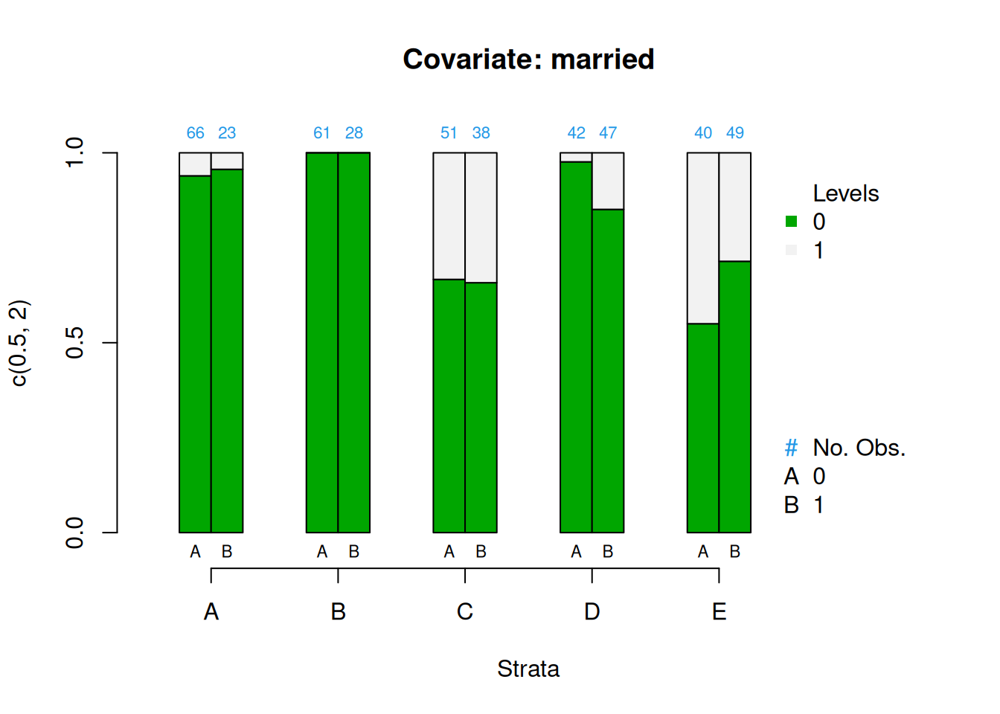
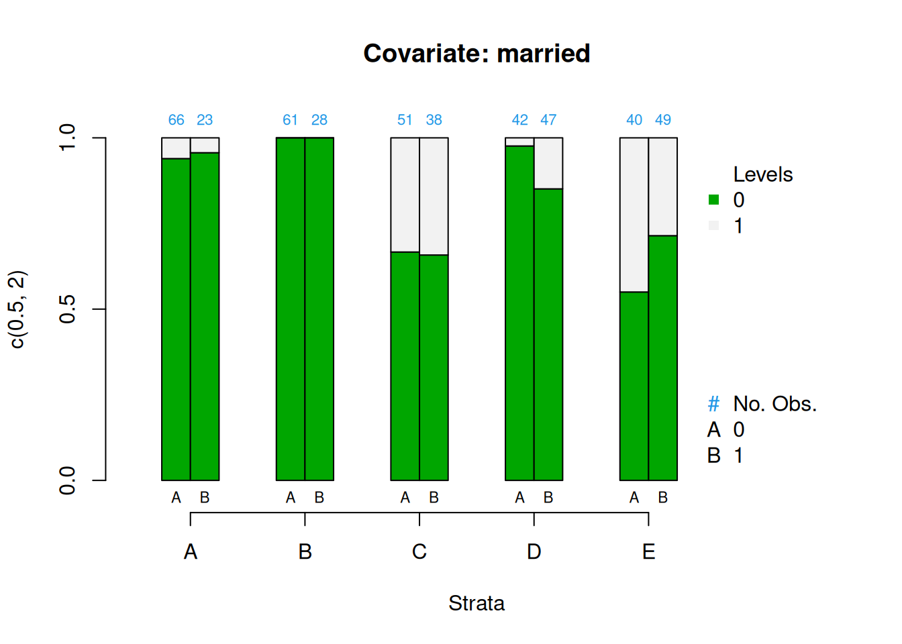
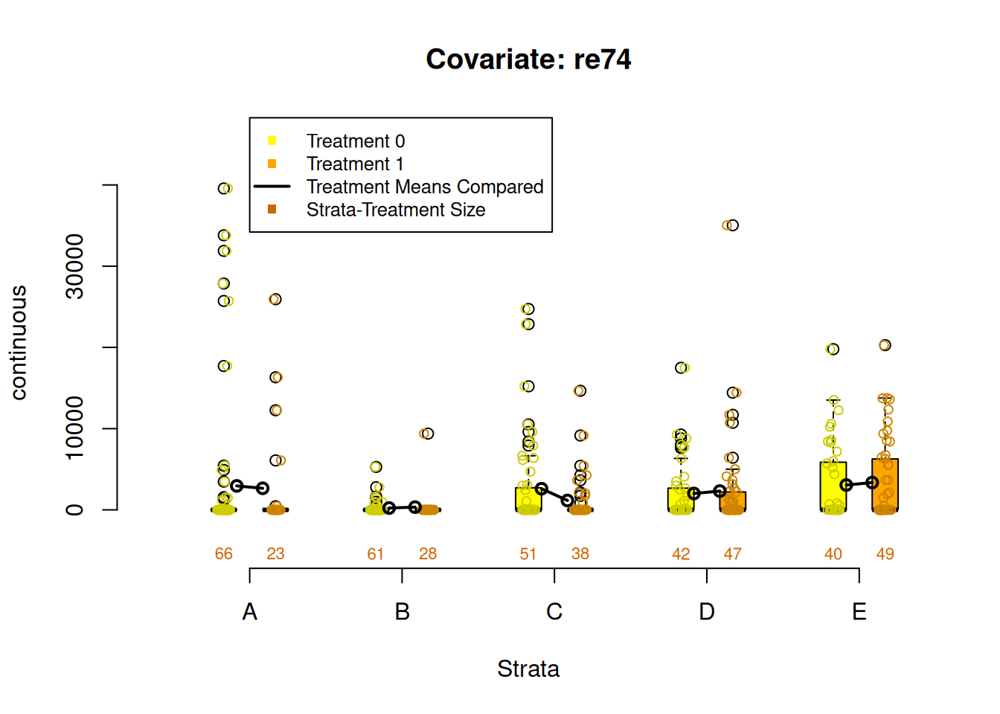
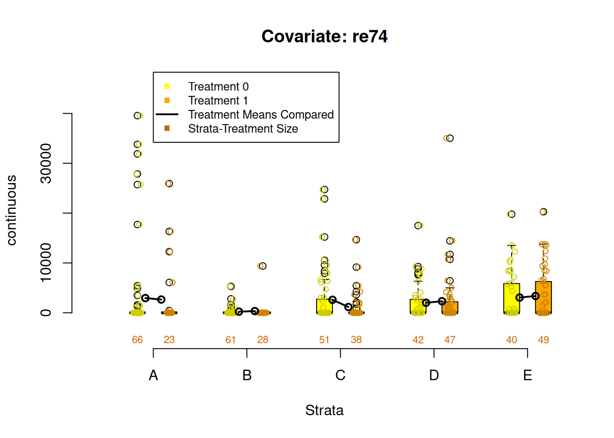

2 Stratification
stratify
verb: stratify; 3rd person present: stratifies; past tense: stratified; past participle: stratified; gerund or present participle: stratifying
1. arrange or classify.
2. form or arrange into strata.
Propensity score stratification leverages propensity scores so we can define strata (or groups) that roughly equivalent on all the observed covariates. Although it is reasonable to start with chapter 3 on matching, stratification is an important method and even if you prefer to use a matching method, stratification will most often be used in order to evaluate balance.
2.1 Phase I: Estimate Propensity Scores (Logistic regression)
To begin let’s estimate propensity scores using logistic regression with the National Supported Work Demonostration (lalonde) dataset (Lalonde 1986). Here, we are using the final model specification used by Dehejia and Wahba (1999).
data(lalonde, package = 'Matching')
lalonde_formu <- treat ~ age + I(age^2) + educ + I(educ^2) + black +
hisp + married + nodegr + re74 + I(re74^2) + re75 + I(re75^2)
lr_out <- glm(formula = lalonde_formu,
data = lalonde,
family = binomial(link = 'logit'))
summary(lr_out)##
## Call:
## glm(formula = lalonde_formu, family = binomial(link = "logit"),
## data = lalonde)
##
## Coefficients:
## Estimate Std. Error z value Pr(>|z|)
## (Intercept) 4.008e+00 2.155e+00 1.860 0.0629 .
## age 1.372e-02 8.929e-02 0.154 0.8779
## I(age^2) -2.535e-04 1.472e-03 -0.172 0.8632
## educ -8.612e-01 4.154e-01 -2.073 0.0382 *
## I(educ^2) 4.482e-02 2.334e-02 1.920 0.0549 .
## black -2.933e-01 3.679e-01 -0.797 0.4253
## hisp -9.472e-01 5.127e-01 -1.847 0.0647 .
## married 1.730e-01 2.826e-01 0.612 0.5404
## nodegr -4.280e-01 3.917e-01 -1.093 0.2745
## re74 4.815e-06 5.689e-05 0.085 0.9326
## I(re74^2) -1.692e-09 1.999e-09 -0.846 0.3974
## re75 1.273e-04 8.310e-05 1.532 0.1256
## I(re75^2) -4.623e-09 4.384e-09 -1.055 0.2916
## ---
## Signif. codes: 0 '***' 0.001 '**' 0.01 '*' 0.05 '.' 0.1 ' ' 1
##
## (Dispersion parameter for binomial family taken to be 1)
##
## Null deviance: 604.20 on 444 degrees of freedom
## Residual deviance: 581.07 on 432 degrees of freedom
## AIC: 607.07
##
## Number of Fisher Scoring iterations: 4
lalonde$lr_ps <- fitted(lr_out)Check the distributions of propensity scores to ensure we have good overlap
ggplot(lalonde, aes(x = lr_ps, color = as.logical(treat))) +
geom_density() +
scale_color_manual('Treatment', values = palette2) +
xlab('Propensity Score')
2.1.1 Stratifying
Stratification using quintiles.
breaks5 <- psa::get_strata_breaks(lalonde$lr_ps)
breaks5## $breaks
## 0% 20% 40% 60% 80% 100%
## 0.08491513 0.34032233 0.35943734 0.40797660 0.51119006 0.83047510
##
## $labels
## strata xmin xmax xmid
## 0% A 0.08491513 0.3403223 0.2126187
## 20% B 0.34032233 0.3594373 0.3498798
## 40% C 0.35943734 0.4079766 0.3837070
## 60% D 0.40797660 0.5111901 0.4595833
## 80% E 0.51119006 0.8304751 0.6708326
lalonde$lr_strata5 <- cut(x = lalonde$lr_ps,
breaks = breaks5$breaks,
include.lowest = TRUE,
labels = breaks5$labels$strata)
table(lalonde$treat, lalonde$lr_strata5)##
## A B C D E
## 0 66 61 51 42 40
## 1 23 28 38 47 49
Figure 2.1: Distribution of propensity scores with strata breaks

Figure 2.2: Scatter plot of propensity scores and log of real earnings 1978 by treatment with strata breaks
2.1.2 Checking Balance
covars <- all.vars(lalonde.formu)
covars <- lalonde[,covars[-1]]
PSAgraphics::cv.bal.psa(covariates = covars,
treatment = lalonde$treat,
propensity = lalonde$lr_ps,
strata = lalonde$lr_strata)
PSAgraphics::box.psa(continuous = lalonde$age,
treatment = lalonde$treat,
strata = lalonde$lr_strata,
xlab = "Strata",
balance = FALSE)
PSAgraphics::cat.psa(categorical = lalonde$nodegr,
treatment = lalonde$treat,
strata = lalonde$lr_strata,
xlab = 'Strata',
balance = FALSE)

 
Figure 2.3: Covariate balance plots for categorical variables
 

Figure 2.4: Covariate balance plots for numeric variables
2.2 Phase II: Estimate Effects
PSAgraphics::loess.psa(response = log(lalonde$re78 + 1),
treatment = lalonde$treat,
propensity = lalonde$lr_ps)## $ATE
## [1] 0.9008386
##
## $se.wtd
## [1] 0.3913399
##
## $CI95
## [1] 0.1181588 1.6835185
##
## $summary.strata
## counts.0 counts.1 means.0 means.1 diff.means
## 1 34 11 6.268705 6.474912 0.2062076
## 2 32 12 5.491717 5.659280 0.1675631
## 3 31 14 5.467712 5.703584 0.2358722
## 4 30 14 5.425593 5.747613 0.3220194
## 5 27 18 5.397146 5.831117 0.4339703
## 6 24 20 5.302660 6.339721 1.0370619
## 7 21 23 5.125331 6.607936 1.4826043
## 8 21 24 5.036908 6.594808 1.5578999
## 9 22 22 5.182703 6.981383 1.7986801
## 10 18 27 6.047529 7.820786 1.7732573
psa::loess_plot(ps = lalonde$lr_ps,
outcome = log(lalonde$re78 + 1),
treatment = lalonde$treat == 1,
responseTitle = 'log(re78)',
plot.strata = 5,
points.treat.alpha = 0.5,
points.control.alpha = 0.5,
percentPoints.treat = 1,
percentPoints.control = 1,
se = FALSE,
method = 'loess')
PSAgraphics::circ.psa(response = log(lalonde$re78 + 1),
treatment = lalonde$treat == 1,
strata = lalonde$lr_strata5)
## $summary.strata
## n.FALSE n.TRUE means.FALSE means.TRUE
## A 66 23 6.280406 6.600537
## B 61 28 4.409935 5.129193
## C 51 38 6.212981 6.455034
## D 42 47 4.705981 6.208840
## E 40 49 5.783529 7.576461
##
## $wtd.Mn.FALSE
## [1] 5.478567
##
## $wtd.Mn.TRUE
## [1] 6.394013
##
## $ATE
## [1] 0.9154463
##
## $se.wtd
## [1] 0.394155
##
## $approx.t
## [1] 2.322554
##
## $df
## [1] 435
##
## $CI.95
## [1] 0.1407612 1.69013142.3 Phase III: Sensitivity Analysis
Now that we have established there is a statistically significant effect of the intervention after adjusting for the selection bias using propensity scores we will want to evaluate the robustness of that effect. Sensitivity analysis is one approach but it is only well defined for matching methods. In chapter 6 we will introduce a bootstrapping method that can help test the robustness. But Rosenbaum (2012) suggest another approach to test the sensitivity is to test the null hypothesis twice. We will do that here using a classification tree approach to estimating propensity scores and strata.
2.3.1 Estimate Propensity Scores (classification tree)

(#fig:tree_plot)Classification tree
##
## 0 1
## 0.332 167 83
## 0.344827586206897 19 10
## 0.351851851851852 35 19
## 0.612903225806452 24 38
## 0.659090909090909 15 29
## 1 0 6
lalonde$tree_strata <- predict(tree_out, type = 'where')
table(lalonde$tree_strata, lalonde$treat, useNA = 'ifany')##
## 0 1
## 3 167 83
## 5 15 29
## 6 35 19
## 9 24 38
## 10 19 10
## 11 0 6